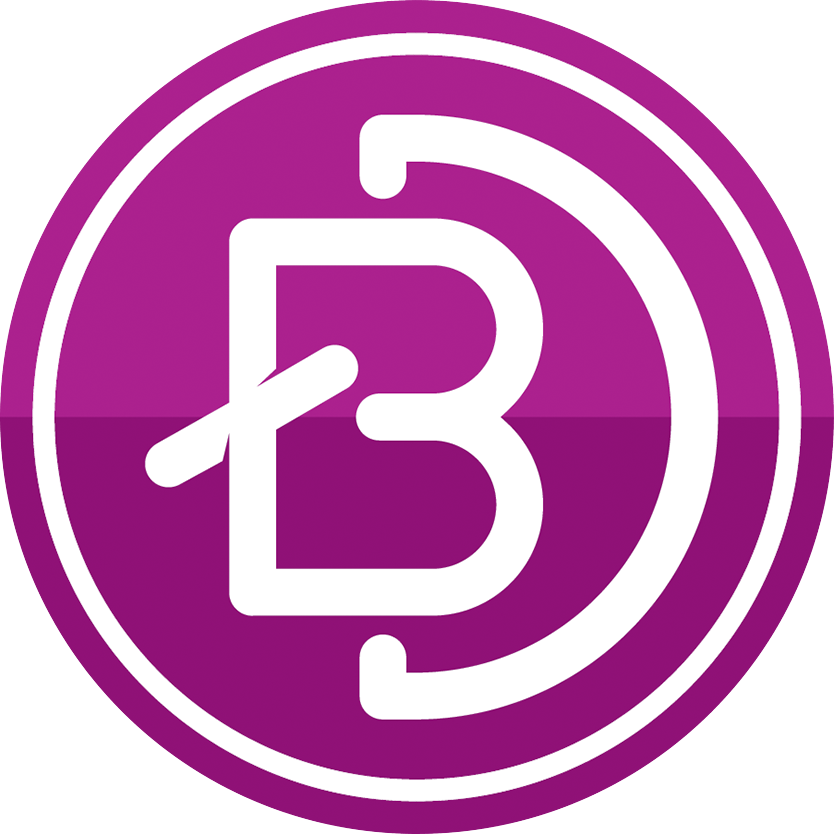
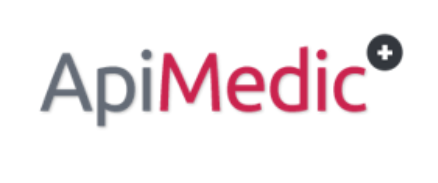

Easing the Transition between patients and their providers, since 2019.
The story of cybeRx begins with a vision by UW Madison Computer Science student Christopher Chu.

Chris started learning web development as a senior at Arrowhead High School. After taking the class and developing a final project that showcases a website about Mars,
Chris decided to take his passion to the next level. He enrolled into the University of Wisconsin as a Badger in 2016 double majoring in computer engineering and computer science.
At Arrowhead, he had been working with HTML and CSS languages, but his schooling at UW Madison as well as online coursework through platforms, exposed him in a myraid of
skills and languages, such as Artificial Intelligence, Machine Learning, iOS Development, Robotics and Javascript/Node.js (which reinforced his skill in web design.)
After embarking on 2 self-projects programmed in Swift and Objective-C, Chris decided to finish implementing a viable product of his idea from a Hackathon in March 2018:
to utilize Machine Learning APIs and his passion for friendly UI Design to create a one-of-a-kind chatbot to help transition patients and their providers.
CyberRx took 3 weeks from the start to end to maximize user experience and provide as much information as possible to potential patients before they see a physician,
helping to rapidly accelerate the medical process, both for patient and caretaker.
Symptom Analytics with Machine Learning and NLP
CybeRx utilizes the power of Machine Learning algorithms to accurately
help patients identify their conditions and lead them
to the right specialist to receive treatment.
Technologies Utilized




Logo History
When designing the logo, Chris wanted it to be an accurate representation of cybeRx's mission:
to maximize user experience and provide as much information as possible to patients
before they see their physician. He decided a friendly robot that served
as a Virtual Assistant would be most suitable. After 20 hours and
5 drafts, the cybeRx logo was born.